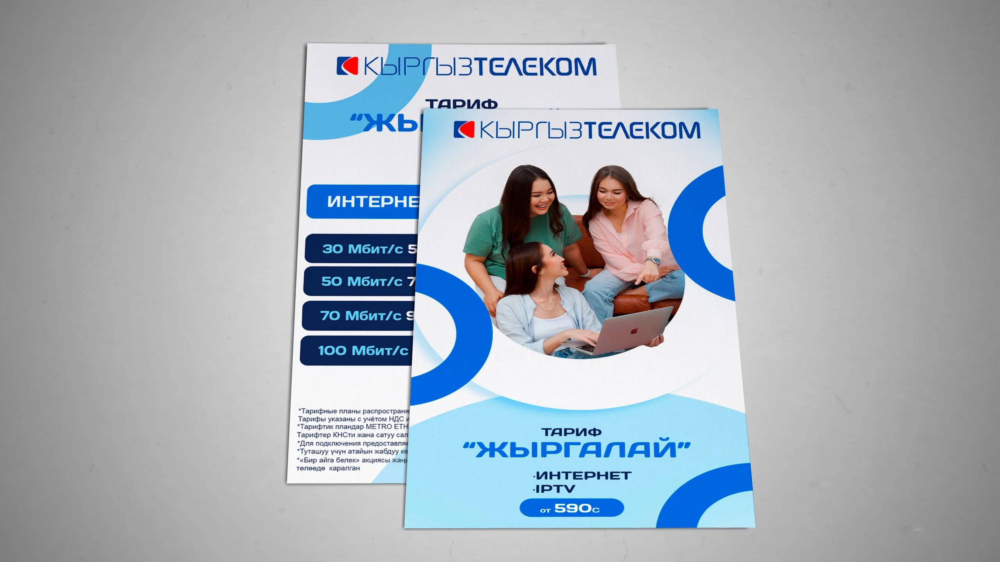
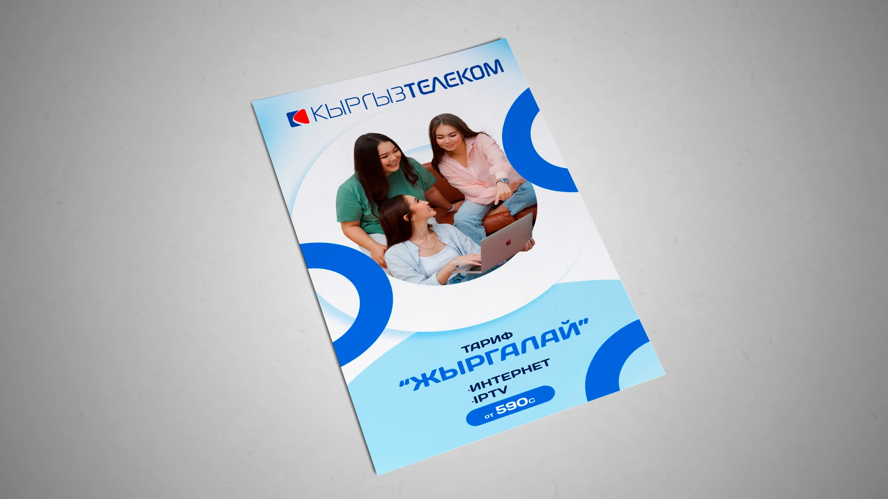

Листовки
Дизайн листовок тарифа "Жыргалай"
Для рекламной кампании тарифа "Жыргалай" от Кыргызтелекома мной были разработаны два
различных дизайна листовок. Основной задачей было создание яркого и запоминающегося
визуального образа, который привлек бы внимание клиентов и легко передавал суть
предложения.
Первый вариант дизайна был ориентирован на минимализм и лаконичность. Я использовал
основные фирменные цвета компании, добавив акценты в виде графических элементов, которые
символизируют технологичность и современность услуг. Второй вариант был более креативным, с
акцентом на яркие визуальные образы, создающие ассоциации с комфортом и удобством,
которые предоставляются пользователям тарифа "Жыргалай".
Оба варианта были тщательно продуманы с точки зрения визуальной иерархии, чтобы
информация о тарифе была легко воспринимаема и понятна. В результате созданные листовки
стали неотъемлемой частью маркетинговой кампании и успешно привлекли новых
пользователей.

